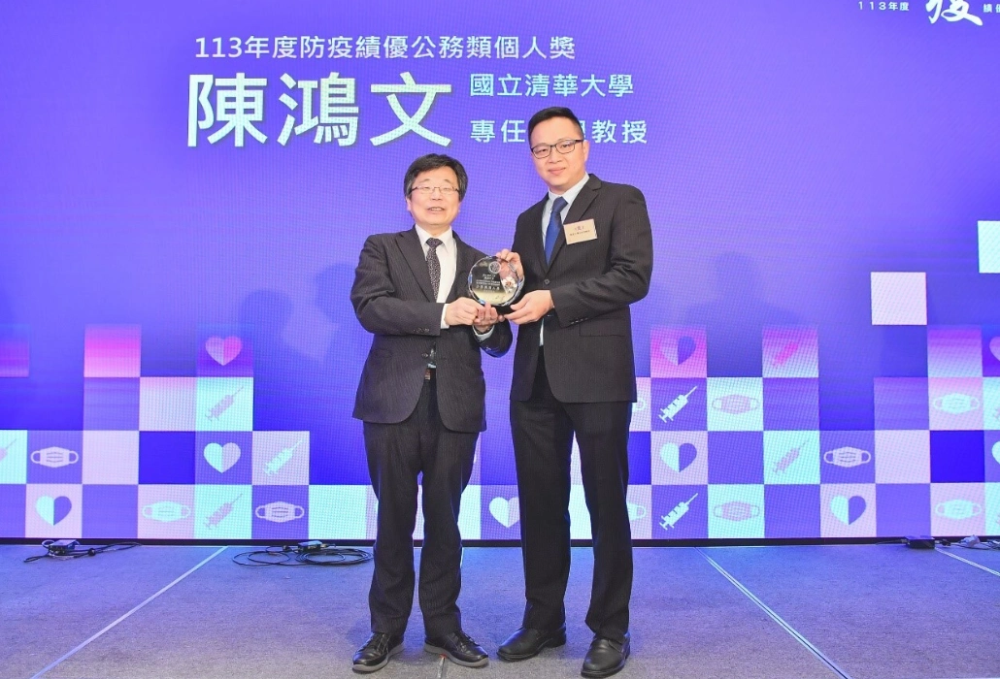

新聞發布 | 2024.11.26
疾病管制署於台北喜來登大飯店舉行「113年度防疫績優獎頒獎典禮」，以「公私協力 疫平人安」為主題，表揚全國68個對傳染病防治貢獻卓著的個人與團體，由衛福部部長邱泰源與疾管署署長莊人祥出席頒獎，並與所有得獎者一同完成別具意義的「疫起守護」拼圖，象徵防疫工作缺一不可，需集結各個公私部門，不同專業領域團體與個人的力量，才能平息疫情，守住國人的健康安全。
在本次的得獎者中，清華大學跨院國際博士班學位學程陳鴻文助理教授榮獲衛福部113年度防疫績優公務類個人獎。陳老師結合各式專業能力，領導m'AI Touch團隊於疫情期間研發全球首創「非接觸式AI感測技術」，在不改變大眾既有使用習慣的情況下，減少實質接觸，成功應用於公共空間如醫院和捷運場域的電梯按鍵，有效降低因接觸造成的疾病傳播風險，提升民眾健康與安全。
該技術結合異質感測器及AI模型，具備高通用性與永續效益，已於多地實體應用，並榮獲國家新創精進獎、國科會未來科技獎、尤努斯創新獎及台達年輕學者科技講座等多項殊榮，充分展現技術與應用的創新性，對防疫工作有著顯著的助益，深受各界肯定與推崇。